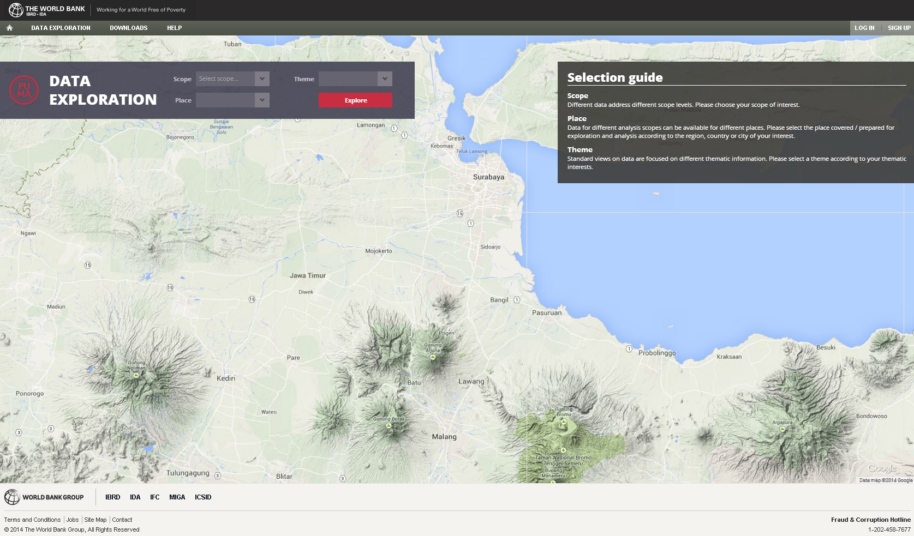

About the PUMA data exploration tool
PUMA, or Platform for Urban Management and Analysis, is a geospatial tool that allows users with no prior GIS experience to access, analyze and share urban spatial data in an interactive and customizable way. Developed by the East Asia and Pacific Urban, Transport and Disaster Risk Management Unit of the World Bank (EASIN), it adapts open-source software to the data needs of the urban development sector. Read a one-page beginner's guide to using PUMA.
The PUMA tool is designed to provide users with an intuitive and user-friendly environment for organizing, exploring, visualizing and analyzing spatial and non-spatial data from various sources (including live data) in an integrated form and with an instantaneous response. PUMA allows users to perform data exploration and customized analysis in an easy-to-use manner, where derived information and views on the data can be further stored or shared with other users. Various presentation modes are integrated into the web interface to enable instantaneous assessment of complex spatial data and non-spatial data provided by an end user.
Functionalities of the tool have been designed based on the World Bank requirements specified within the project capitalizing on long-time experiences of the GISAT company with integrated and innovative presentations of spatial-enabled information in the frame of similar projects. In addition, the PUMA platform has incorporated user feedback during the service utility phase of the project and currently represents a solid base for further upgrades and enhancements.

Any information on the data exploration tool can be found in this Help section.